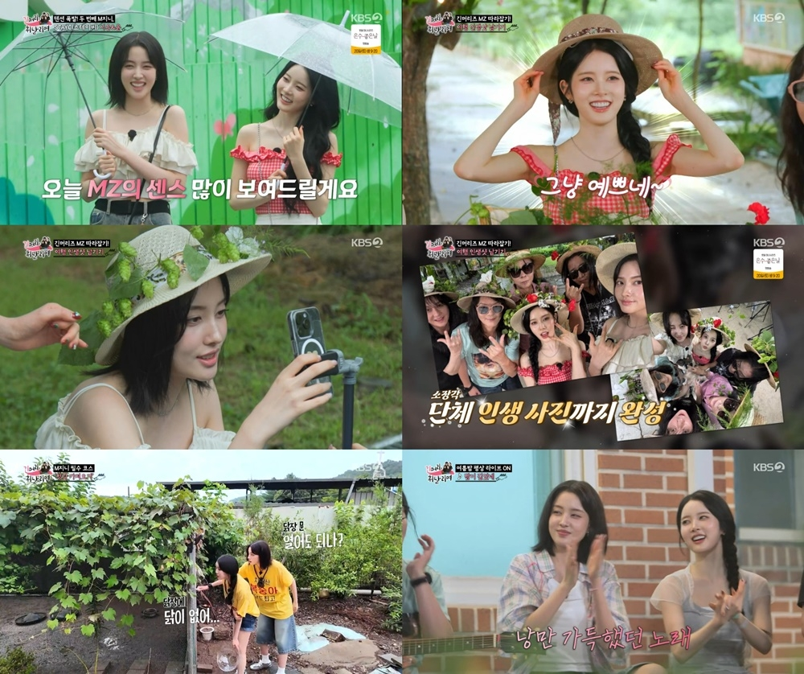

KBS2 ‘긴머리 휘날리며’ 방송 캡처
걸그룹 스테이씨(STAYC)의 시은, 윤이 MZ세대의 에너지와 친화력으로 안방을 사로잡았다.
시은과 윤은 지난 17일 방송된 KBS2 ‘긴머리 휘날리며’에 출연해 전설의 긴머리 로커 김태원, 김종서, 김경호, 박완규 4인방과 함께 힐링 촌캉스를 즐겼다.
시은과 윤은 “선배님들과 같이 놀려고 왔다”며 등장부터 높은 텐션으로 분위기를 띄웠다. 김종서는 어린 시절에 봤던 시은을 다시 만나 남다른 감회를 전했고, 김태원은 “만화에 나오는 사람처럼 생겼다”며 칭찬을 아끼지 않았다.
시은과 윤은 알파카월드에서 알파카를 만났다. 시은은 알파카들을 몰고 다니며 남다른 조련 실력을 보여줬고 윤은 막상 알파카가 다가오자, 겁에 질린 모습으로 귀여운 매력을 드러냈다.
시은과 윤은 숙소에 도착한 뒤 청란 가져오기에 도전했다. 두 사람은 겁먹은 모습을 보이기도 했지만 이내 두려움을 극복하고 청란을 획득했다. 시은은 “역시 사람은 과감해야 돼”라며 만족했고, 청란을 수북이 담아 온 두 사람은 ‘긴머리즈’ 앞에서 의기양양한 모습을 보였다.
고된 하루를 보낸 뒤 식사를 마친 시은과 윤은 ‘긴머리즈’와 고무신 게임을 즐겼고, 평상에서 라이브를 선보이며 세대를 아우르는 음악적 교감을 펼쳤다. 끝으로 시은은 “친척들을 만난 느낌”이라고 전했고 윤은 “레전드이신 선배님들과 오늘 너무 행복한 시간을 보냈다”며 의미 있는 소감을 전했다.
스테이씨는 오는 10월 2일(현지 시각) 미국 시애틀을 시작으로 로스앤젤레스, 보스턴, 뉴욕, 토론토 등 총 10개 도시에서 월드투어를 펼친다.